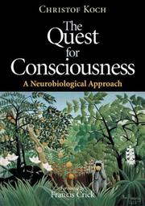

The Quest for Consciousness: A Neurobiological Approach
Book·Christof Koch, 2004·意识探秘

Crick and Koch's approach to searching for the neural correlates of consciousness, using visual research as the entry point.
- Author
- Christof Koch
- Year
- 2004
- Difficulty
- Intermediate
- Kind
- Primary text
- Schools
- Cognitive Neuroscience
- Core theories
- Neural Correlates of Consciousness
Editions
- Chinese edition 《意识探秘》 [美] 克里斯托夫·科赫 · tr. 顾凡及 / 侯晓迪 · 上海科学技术出版社 · 2012 Douban 8.6 (384 ratings) Douban page ↗
- English edition The Quest for Consciousness: A Neurobiological Approach Christof Koch · Roberts and Company, first edition · 2004 Open Library ↗